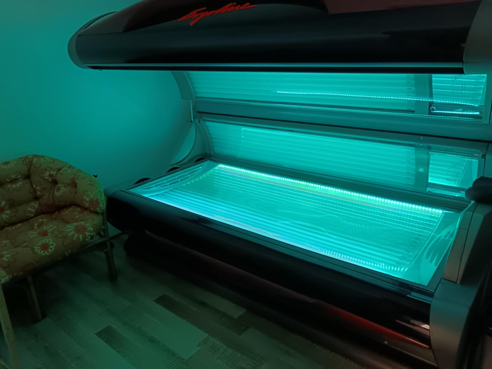

Solárium

Solárium představuje pohodlný způsob získání přitažlivě opálené pleti.
Opalování v soláriu je méně nebezpečné, než vystavování se přírodnímu slunečnímu záření.
Solárium - Proč se opalovat:
Víte, že blahodárné účinky UV záření na tělo i duši jsou prokázány i po lékařské stránce?
Příznivě působí na kloubní onemocnění, bolesti zad, na srdce a krevní oběh, astma.
Výrazně zlepšuje kožní onemocnění, akné, křečové žíly, plísně, ekzémy, lupénku.
Stimuluje imunitní systém.
Zvyšuje tělesnou výkonnost a sexualitu.
Působí protistresově a jako prevence proti nachlazení a chřipce.